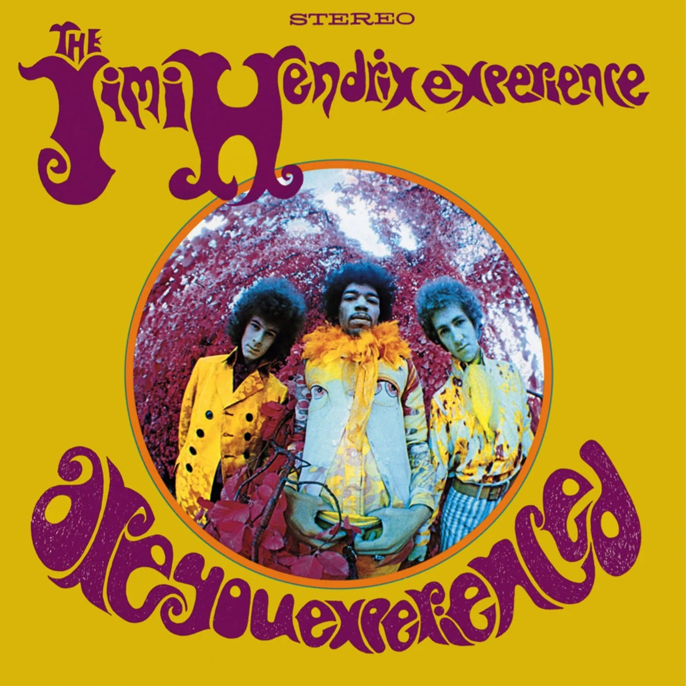

With the job title of "Experience Designer" you would think I'd be better at defining what an experience is. But honestly, I've rarely been asked about the "experience" bit. Usually it’s what comes in front of it (customer, user, etc.). In the last few years, it's come to mean someone that makes wireframes, almost always for apps or websites. So I've resorted to calling myself a retail experience designer. Occasionally people ask about the designer bit, which is easier to explain. "Well, I design things". But the experience part has always been difficult to define or explain.
So what makes an experience an experience?

One thing that makes experiences hard to define is that they're usually personal. While something may be a life changing experience for one person, for another it might be utterly ordinary and totally routine. That context is incredibly important in defining an experience. Probably the most important part of an experience is that it rises above the din. It has to stand out from the routine, the everyday, the mundane.
Therefore the context and setup of an experience are as important as the actual interactions that make up the experience itself. We don't experience things in a vacuum, and past interactions, memories, the things we've heard, the mood we're in and the interactions that lead up to an experience can inform and affect whether or not that experience is meaningful to us in any way. If it is meaningful, then it will produce an emotional response, which forms a major part of whether an interaction converts into an experience.
That doesn't just include good emotions, it includes the bad as well. Strong emotional dips can also make for strong, memorable experiences. The science backs it up. Our memory biases show us that the peaks (or troughs) are far more likely to be remembered than the baseline emotional responses. It's an essential part behind the Peak-End rule that every behavioral economist loves to refer to. We can't remember everything, and the brain tends to filter out the mundane, routine stuff, and keep only the "precious moments".
That's the third important part of what makes an experience an experience. It's memorable. Long after we've had an experience, the memory remains fresh and vivid in our minds. Human memory is incredibly unreliable, so we may only include certain parts of the experience, but those neural pathways remain strong and connected. There's a tendency to remember things that have recently passed (the recency bias aka the "End" of the Peak-End rule) but an experience that can produce a strong enough emotional response will remain in memory for a long period of time.
So to recap, an experience is incredibly personal and subjective, it's strong, emotional, and leaves a vivid impression in our memories. And most of our memories are the strong emotional landmarks or touchstones of our lives. Some good, some bad, and usually a whole lot of the cringe-worthy things that were far more emotionally scarring than they had any right to be.
(Why can I remember something embarrassing from 4th grade, but not my ATM PIN?)
This collection of unique and memorable experiences, that becomes our lived experience. This "lived experience" has somehow become a shorthand for workplace wisdom, and the bane of every recent graduate looking for a job.
Now that we know about what an experience is, the next question is can we design an experience? Yeah, probably.
Since so much of an experience is about context, if we can understand the context behind a certain interaction, we can anticipate a user's wants and needs. Being able to give customers what they want, when they want it, may not produce a major emotional high, but can prevent a frustrating experience. And often, being able to avoid those troughs is enough for a lot of experiences. A single poor interaction can ruin an otherwise good experience (see: Negativity Bias).
If we know people are frustrated by waiting, then we can try to optimize processes to reduce the wait time. If we can't do that, then we can tell customers how long they have to wait, and why they're waiting. These kinds of changes all rely on empathy and understanding of the customer and the context of their interactions, but can remove a lot of frustration from what should be a simple interaction.
The other option is to create something that is truly extraordinary. Something so mind-blowing or beautiful or unexpected, that people's minds and bodies have trouble physically comprehending what they're experiencing. Yes it's a thing. It's called Stendahl syndrome. Examples include Liszt Fever or Beatlemania (If you're experiencing symptoms, contact your doctor now). If you're creative enough to make things that elicit such an emotional response, then you're well on your way to creating memorable experiences.
But unless I can make some kind of Faustian deal and wake up with Liszt-like virtuosity, I'll need to stick to an empathy based approach, call myself an Experience Designer, and point people the this article if they ask me "What really is an experience?"
Why we remember emotional events.
A great 99% Invisible Episode about the emotions a painting can evoke.
Some background on Daniel Kahneman and the Peak-End rule.
A paper on the Negativity Bias, amusingly titled Bad Is Stronger Than Good.